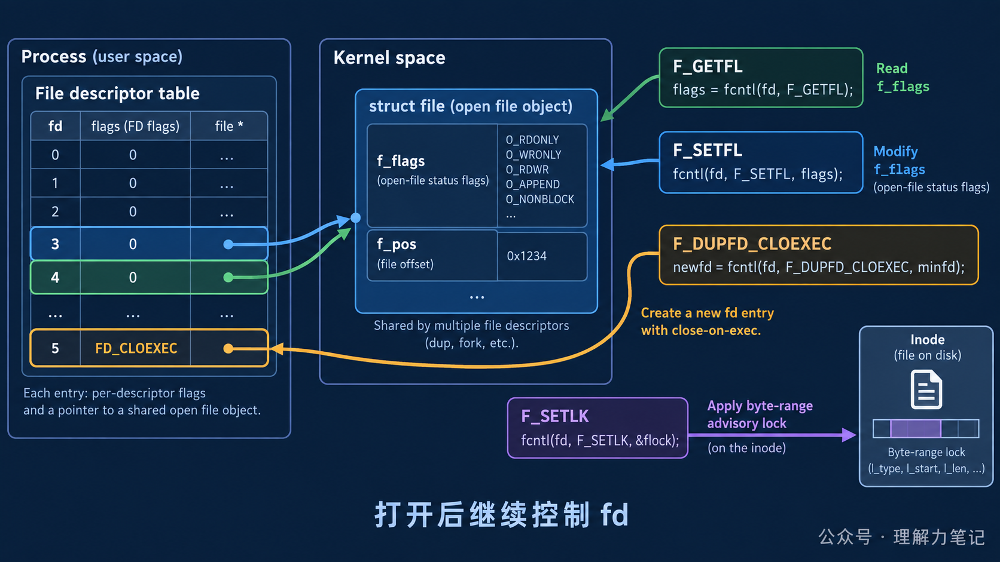

fcntl：文件打开后，如何控制一个 fd？文件一旦 open 成功，很多程序还需要改变它的行为：追加写、设置非阻塞、避免 exec 泄漏，或者让多个进程协作访问同一段文件。为每种变化重新打开文件既麻烦，也可能改变访问模式。
结论：
fcntl用命令参数控制已经打开的文件描述符：F_GETFL/F_SETFL读取或修改打开文件状态，F_DUPFD_CLOEXEC复制并设置 close-on-exec，F_SETLK/F_SETLKW申请建议性记录锁。先区分命令操作的是 fd 表项还是打开文件对象，再处理返回值和生命周期。
这篇文章怎么读？
无论你为什么点进来，都能各取所需——只解决手头问题，看第一章就够；想彻底搞懂，再往下读。
| 你是谁 | 看哪一章 | 会得到什么 |
|---|---|---|
| 搜索者 / 被推荐者 | 第一章 · 先解决问题 | 最快的答案（知其然） |
| 学习者 | 第二章 · 机制解释 | 底层的来龙去脉（知其所以然） |
| 编程者 | 第三章 · 工程使用 | 正确、能直接用的写法 |
| 求职者 | 第四章 · 面试提炼 | 会怎么问、怎么答（按需） |
fcntl 在打开后改变 fd 行为这段程序可以直接编译运行：先读取普通文件的状态标志，再打开 O_APPEND，最后复制一个带 close-on-exec 的 fd。代码和下面的输出一一对应。
环境是 macOS 14.8.8、Apple clang 16.0.0。上面的最小代码保存在 minimal_usage.c；包含记录锁和完整错误路径的版本在 fcntl_demo.c：
fd 数字来自本次进程启动时的分配顺序，换一次运行可能不同；状态从 normal 变成 append，以及复制成功，才是实验要观察的事实。
进程的 fd 表项保存“这个进程用哪个整数访问对象”；表项再指向打开文件对象，里面有当前偏移、状态标志和引用关系。F_GETFL / F_SETFL 面向打开文件状态，F_DUPFD_CLOEXEC 则创建新的 fd 表项并设置 close-on-exec。

O_APPEND、非阻塞等属于打开文件状态，多个指向同一打开文件对象的 fd 可能共享它们；FD_CLOEXEC 属于单个 fd 表项，复制 fd 时应使用 F_DUPFD_CLOEXEC 或明确设置，避免把不该继承的描述符带入 exec 后的新程序。
F_SETLK 申请非阻塞记录锁，拿不到时通常返回 EACCES 或 EAGAIN；F_SETLKW 则可以等待。锁只对遵守这套协议的进程有约束力，不能替代对所有写路径的强制拦截。完整实验 fcntl_demo.c 会让父进程持锁，再让子进程尝试同一范围，观察失败返回。
| 需求 | fcntl 命令 |
注意点 |
|---|---|---|
| 查询或修改追加、非阻塞等状态 | F_GETFL / F_SETFL |
只修改允许修改的状态位，保留其他位 |
复制并防止 exec 泄漏 |
F_DUPFD_CLOEXEC |
新旧 fd 都要明确关闭责任 |
| 申请文件区域建议锁 | F_SETLK / F_SETLKW |
约定锁范围、持有者和释放路径 |
fcntl 返回 -1 时才读取 errno。不同命令的第三个参数类型不同：状态标志是整数，记录锁是 struct flock *；不能把一个命令的参数形式套到另一个命令上。修改状态后再次 F_GETFL 检查，能让实验和诊断更可靠。
复制 fd 后，两个 fd 都指向同一个打开文件对象，但它们仍是两个需要关闭的整数句柄。加锁进程退出或关闭相关 fd 后，锁的行为还受平台语义影响；工程代码应在正常路径和错误路径都显式解锁、关闭并记录失败。
fcntl 让程序在文件打开后继续控制 fd：F_GETFL / F_SETFL 管打开文件状态，F_DUPFD_CLOEXEC 管 fd 复制和继承边界，F_SETLK(W) 管建议性记录锁。选择命令时先确认对象层次，再检查命令对应的参数、返回值和资源释放。
F_SETFL 能修改访问模式吗？ 不能随意修改。它主要修改实现允许的状态标志，例如追加和非阻塞；访问模式应在 open 时确定。
复制出来的 fd 是否拥有独立偏移？ 不一定。复制 fd 指向同一个打开文件对象，文件偏移等状态可能共享；需要独立偏移时应重新打开或使用显式偏移接口。
记录锁是不是强制锁？ 不是。它是建议性协议，其他代码绕过锁仍可能访问同一文件。
转载说明：本文用于技术学习与交流，转载请保留原文与出处。
本文为公众号「理解力笔记」原创。转载请联系作者，并保留出处。